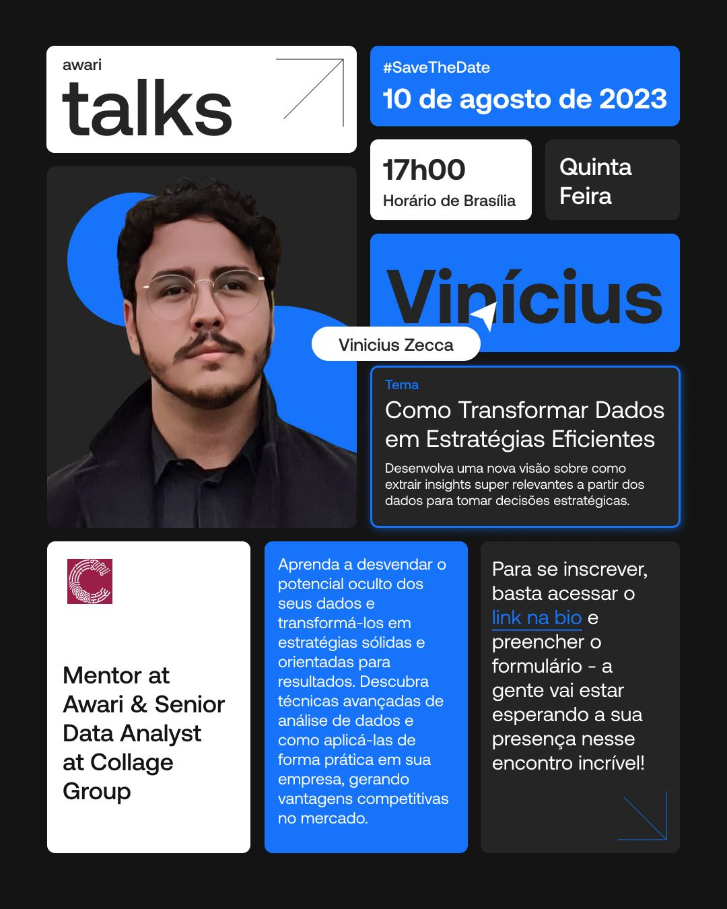
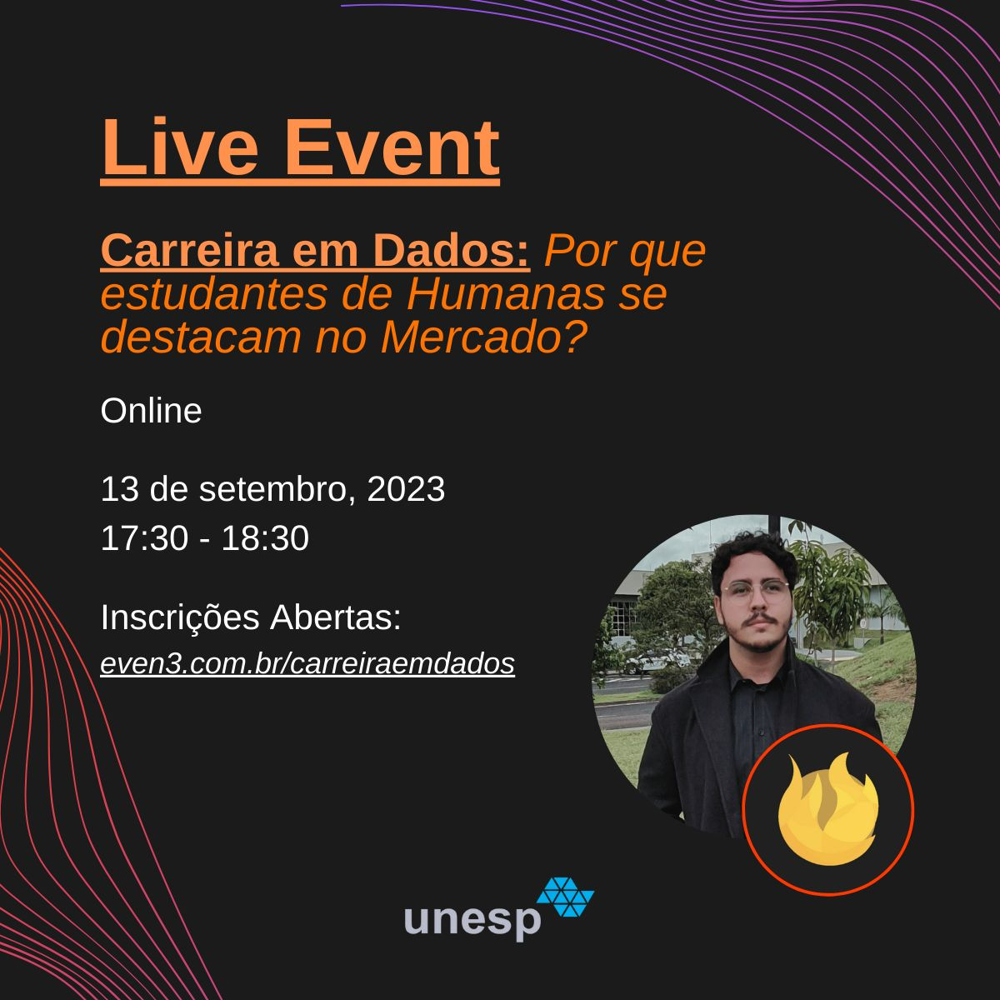

Machine Learning
Built AutoML workflows for tuning, cross-validation, and model evaluation, including custom scoring systems and a similarity classifier written from scratch for research data.
Multidisciplinary AI/ML Manager focused on machine learning,
research, and AI product execution for international businesses.
Specialized in classification and recommendation systems, building
marketer-facing products for insights, strategy, and growth
teams.
Fluent and working in English, Spanish, and Portuguese.

International Relations bachelor, self-taught in coding and statistics, later specialized in Computer Science and now pursuing a Masters in Computational Intelligence. Worked for years with growth insights, migrated to research and consumer behavior later on. My work is involved at the intersection of machine learning, AI workflows, product thinking, and consumer analysis.
Built AutoML workflows for tuning, cross-validation, and model evaluation, including custom scoring systems and a similarity classifier written from scratch for research data.

Designed and shipped agentic workflows, time-sensitive RAG systems, and text-to-SQL experiences so non-technical users can interact with complex data and internal knowledge more easily.
Developed internal packages, ETLs, and FastAPI services to move machine learning and AI workflows into production through AWS Lambda, EC2, Fargate, and Airflow.
Developed projects and solutions for Disney, Ford, Amazon, Best Buy, U.S. Bank, Lowe's, Victoria's Secret, Red Bull, Celsius, Haleon, NHL, Adsmovil and many more, plus venture capitals such as Positive Ventures, ALIVE, and DILA Capital.
Public launches and news coverage tied to products, workflows, and initiatives I helped build, lead, or ship.
Academic work, open projects, writing, and speaking collected in a single place for deeper exploration.


Roles spanning hands-on data science, AI product delivery, teaching, and team leadership.
AI / ML Manager Jan 2026 - Present
Technical Engineering Manager for the Data Science and Engineering team. Responsible for the methodological decisions, evaluation standards, coaching and guiding a team with one Data Analyst, two Data Scientists and one Data Engineer. Hands on work on more strategic projects, and helping product with requirements, scoping, and implementation strategy, along with capacity planning and product decisions.
Data Scientist Aug 2023 - Dec 2025
Senior and Team Lead, worked on a cross-functional role directly under the CTO. Leading Data Science decisions, initiatives and projects. Developed the entire Machine Learning workflow to support 4000+ Custom Audiences (leading upsell product in 2024) and AI initiatives with production ready features.
Professor, Decision Intelligence Feb 2024 – Sep 2024
Personally invited by FIAP's MBA Programs Coordinator to teach Decision Intelligence in the MBA Program of Digital Transformation Cognitive Business. Led the discipline, covering Decision Science and related skills for professionals in digital transformation.
Data Science & Analytics Mentor May 2023 – Mar 2025
Mentored 40+ students 1-on-1, helping them achieve career goals and new positions in Data Analytics, Data Science, and Data Engineering. Provided career and development guidance, answered questions, and shared knowledge to support mentees' next steps in the data field.
Senior Business Planning & Analytics Analyst July 2021 – July 2023
Started in a junior position and helped found the Business Planning & Analytics area. Grew to a senior role, responsible for strategy design and planning with directors of Finance, Marketing, and Business Development. Developed new processes, CRM, acquisition funnel, and digital marketing structure, performing cross-source analytics to improve decision-making.
Market Intelligence April 2019 – August 2020
Worked while pursuing a bachelor's in International Affairs, developing solutions to prospect and research which countries had the best probability of success for each client's product and audience. Developed the OKR system and implemented the digital marketing strategy that led to 3 major awards in the Junior Enterprise field.
Academic background shaped by international affairs, statistics, computer science, and applied analytics.
Universidade Estadual Paulista (UNESP) - Institute of Biosciences, Letters, and Exact Sciences (IBILCE - UNESP) 2025 - Present
Master of Science program in Computer Science offered by the São Paulo State University (UNESP), one of Brazil's leading public universities. Developed within the Postgraduate Program in Computer Science (PPGCC), which emphasizes research in applied computing and systems.
Universidade de Sao Paulo (USP) - Institute of Mathematical and Computer Sciences (ICMC- USP) 2024 - 2025
MBA Program coordinated by the Research Center of Applied Mathematics (CeMEAI - USP) in the Institute of Mathematical and Computer Sciences (ICMC- USP), one of the most renewed Universities in Brazil and Latin America.
Universidade de Campinas (UNICAMP) - Faculty of Applied Sciences 2020 - 2021
Selected by an Exchange Program as Special Student. Studied R (Tidyverse, MongoDBLite, SQLite, ggplot2) and Python (pandas, numpy, matplot) for Statistical Analysis and testing.
University of Colorado, Boulder (Online) 2020
Business Analytics online specialization focused on solving problems with Statistics using SQL and Data Modelling.
Universidade do Estado de Sao Paulo (UNESP) - Faculty of Human and Social Sciences 2019 - 2022
Founded a Quantitative Methods study group to study statistics and data analysis in research. Co-founded the Research Nucleus on Ethics, Philosophy and Social Theories. FAPESP scholarship for research in political science, philosophy, and religion in Thomas Hobbes.
Available for interesting projects, collaborations, events and new opportunities.